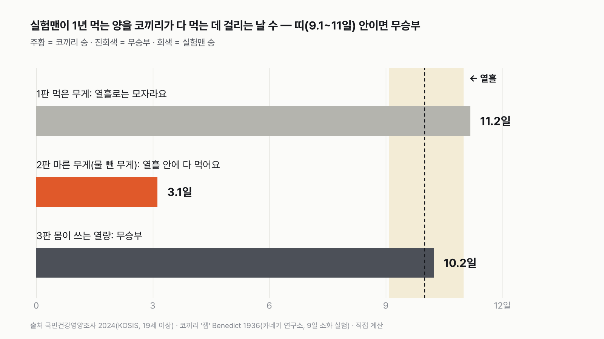
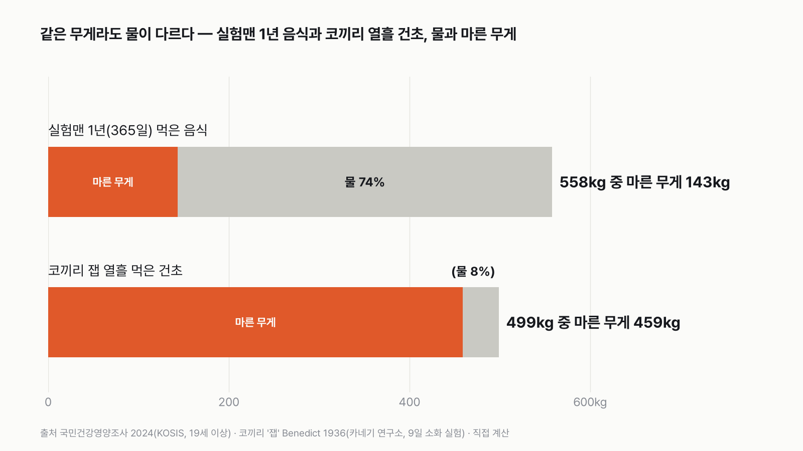
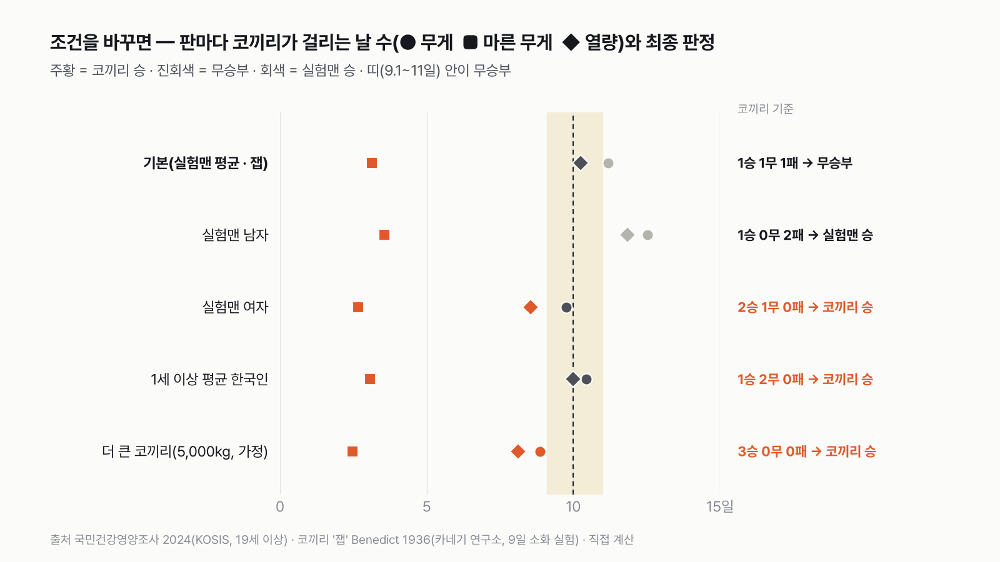

실험맨이 1년 먹는 음식, 코끼리는 열흘 안에 다 먹을까
코끼리 몸무게는 어른 남자 평균의 마흔 배가 넘어요. 그런데 먹는 양도 꼭 그만큼일까요? 열흘이면 넉넉한지, 모자란지 먼저 골라 주세요.
독자 투표
실험맨(평균 한국인)이 1년 동안 먹는 음식, 코끼리는 열흘 안에 다 먹을까?
- 평균 한국인 '실험맨'이 1년 동안 먹는 음식을 코끼리 한 마리 앞에 쌓았어요. 코끼리는 이걸 열흘 안에 다 먹을 수 있을까요?
- 밥 한 공기에도 물이 3분의 2예요. 코끼리 건초는 바싹 마른 풀이에요.
- 먹은 무게, 물 뺀 무게, 몸이 쓰는 열량 세 판으로 겨뤘어요. 판마다 답이 달라요.
조건과 규칙
- 실험맨은 평균 한국인이에요. 국민건강영양조사가 잰 19세 이상 남녀의 하루 섭취량(2024)을 365일로 곱해 1년 치를 만들어요. 마시는 맹물은 빼요.
- 코끼리는 사람이 기르는 성체 아시아코끼리예요. 하루치를 모두 달아 잰 실험 기록을 써요. 코끼리도 마신 물은 빼요.
- 세 판 모두 같은 실험맨, 같은 코끼리예요. 1판은 먹은 그대로의 무게, 2판은 물을 뺀 무게, 3판은 몸이 실제로 쓸 수 있는 열량으로 재요.
- 코끼리가 실험맨 1년 치를 다 먹는 데 걸리는 날 수로 판정해요. 열흘과 1.1배 이상 차이 나야 승부가 나요. 11일보다 길면 '모자라요', 9.1일보다 짧으면 '다 먹어요', 그 사이는 무승부예요.
결과 요약
3판 1승 1무 1패 → 최종 무승부(거의 딱 열흘)
- 먹은 그대로의 무게로는 11.2일이 걸려 열흘로는 모자라요. 무승부 선(11일)을 겨우 넘었어요.
- 물을 뺀 무게로는 3.1일이면 끝나요. 실험맨의 음식은 74%가 물이고, 코끼리 건초는 8%만 물이라서예요.
- 몸이 쓰는 열량으로는 10.2일, 열흘에 딱 붙어 무승부예요.
그래서? 실험맨의 1년은 코끼리의 열흘과 거의 같아요. 다만 남자 실험맨이 1년 먹는 양이면 열흘로 모자라고, 여자 실험맨이 1년 먹는 양이면 열흘 안에 끝나요.
독자 예상 vs 데이터 결과
실험맨(평균 한국인)이 1년 동안 먹는 음식, 코끼리는 열흘 안에 다 먹을까?
데이터 결과: 무승부. 규칙상 비김(10.2일, 1.1배 안쪽). 무게로는 11.2일(모자람), 물 뺀 무게로는 3.1일(다 먹음), 몸이 쓰는 열량으로는 10.2일(무승부)이에요. 1승 1무 1패, 무승부예요.


숫자 세 개로 줄이면 이래요. 실험맨은 1년 동안 음식 558kg을 먹고, 그 안에 든 열량은 약 70만kcal예요. 코끼리는 하루에 건초 50kg을 먹고, 그중 몸에 남는 열량은 6.8만kcal예요. 무게로도 열량으로도 실험맨 1년은 코끼리의 열흘 남짓이에요.
558kg은 몸무게 70kg인 사람의 여덟 배예요. 1년 동안 내 몸무게의 여덟 배를 먹는 거예요. 그중 4분의 3이 물이에요.
| 판 | 실험맨 1년 | 코끼리 하루 | 코끼리가 걸리는 날 | 승자 |
|---|---|---|---|---|
| 1판 먹은 무게 | 557.9kg | 49.9kg | 11.2일(열흘의 1.12배) | 열흘로는 모자라요(실험맨) |
| 2판 마른 무게(물 뺀 무게) | 143.3kg | 45.9kg | 3.1일(열흘의 0.31배) | 열흘 안에 다 먹어요(코끼리) |
| 3판 몸이 쓰는 열량 | 69.8만kcal | 6.8만kcal | 10.2일(열흘의 1.02배) | 무승부 |
| 최종 | 3판 1승 1무 1패 → 무승부 |
판마다 코끼리가 걸리는 날 수를 열흘과 견줬어요. 열흘과 1.1배 이상 차이 나야 승부가 나요. 11일보다 길면 '모자라요', 9.1일보다 짧으면 '다 먹어요', 그 사이는 무승부예요. 이긴 폭은 따지지 않아요. 1승은 1승이에요. 이 규칙과 가정이면 최종 판정은 무승부예요. 세 판이 모두 다른 결과로 갈렸어요.
1판 먹은 무게: 열흘로는 모자라요(11.2일)
국민건강영양조사는 사람들이 하루 동안 먹은 음식을 하나하나 물어 무게로 바꿔요. 2024년 19세 이상 평균은 하루 1,528g이에요. 밥, 김치, 과일, 우유, 커피와 술까지 다 들어간 무게예요. 1년이면 558kg이에요. 코끼리 '잽'은 건초를 하루 49.9kg 먹었어요. 그래서 실험맨 1년 치를 다 먹는 데 11.2일이 걸려요. 무승부 선은 11일이라, 겨우 0.2일 차이로 '모자라요'가 됐어요. 실험맨이 하루에 25g(1.6%)만 덜 먹었어도 무승부였어요.
2판 마른 무게: 열흘 안에 다 먹어요(3.1일)
같은 1kg이라도 무엇이 들었는지가 달라요. 실험맨 음식에서 물을 빼고 단백질, 지방, 탄수화물, 무기질만 남기면 하루 393g이에요. 1년이면 143kg으로, 처음 무게의 4분의 1로 줄어요. 건초는 원래 바싹 말린 풀이라 물이 8%뿐이에요. 잽이 하루 먹은 건초 49.9kg에서 물을 빼도 45.9kg이 남아요. 그래서 이 판에서는 코끼리가 3.1일 만에 끝내요. 저는 세 판이 비슷하게 나올 줄 알았는데, 물 하나로 날 수가 세 배 넘게 벌어져 놀랐어요.


3판 몸이 쓰는 열량: 무승부(10.2일)
음식에 적힌 열량은 사람 몸이 실제로 쓸 수 있는 열량에 맞춰 정한 값이에요. 실험맨은 하루 1,912kcal, 1년이면 약 70만kcal예요. 코끼리는 같은 기준으로 맞춰야 공정해요. 잽을 연구한 팀은 건초의 열량에서 똥, 오줌, 메탄가스로 나간 열량을 재서 뺐어요. 그렇게 몸에 남은 열량이 하루 6만 8,149kcal예요. 실험맨 1년 치를 채우는 데 10.2일, 열흘과 2% 차이라 무승부예요.
코끼리는 먹은 열량의 3분의 1만 써요
건초를 그대로 태우면 나오는 열은 하루 20만 6,500kcal예요. 그런데 잽의 몸에 남은 건 그 33%뿐이에요. 연구팀은 "이 연구소가 아는 동물 가운데 먹이를 이보다 못 쓰는 동물은 없다"고 적었어요. 사람 음식으로 똑같이 '태우면 나오는 열'을 어림하면 하루 2,000kcal 남짓이라, 그 잣대로는 코끼리가 3.5일 만에 끝내요(판정엔 안 넣은 어림). 코끼리가 하루 종일 먹어야 하는 까닭이 이 숫자에 있어요.
잽은 어떤 코끼리였나
잽은 미국 뉴저지에서 서커스 코끼리로 지내던 암컷 아시아코끼리예요. 1935년에 저울에 올라 3,672kg이었어요. 영양학자 베네딕트 팀은 1935년 4월, 9일 동안 준 건초를 하나하나 달고, 남긴 건초와 눈 똥을 밤낮으로 모아 쟀어요. 잽이 이 기간에 들어온 열량과 나간 열량을 맞춰 보니 들어온 쪽이 1.6% 많았어요. 몸무게를 지키는 데 필요한 만큼보다 조금 넉넉히 먹은 거예요. 이때 잽은 겨울 헛간에 묶여 지냈어요. 사육사들은 서커스 순회 철에는 건초를 세 배 준다고 했어요.
코끼리 쪽을 바꾸면
태국의 사육 코끼리 10마리를 잰 2014년 연구를 보면, 요즘 코끼리는 풀 말고도 사료, 쌀, 사탕수수, 바나나를 먹어요. 몸이 소화한 열량은 마리마다 두 배 넘게 차이 났어요. 잽의 몸무게에 이 범위를 넣으면 3판은 적게 먹는 코끼리 12.5일(모자라요), 많이 먹는 코끼리 5.4일(다 먹어요)이에요. 중앙아프리카의 야생 아프리카코끼리는 하루 몸무게의 7% 가까이 먹는다는 측정이 있어요. 이 값이 생풀 무게라면, 잽 몸무게로는 하루 257kg이고 1판이 2.2일로 뒤집혀요. 순회 철의 잽처럼 건초를 세 배 먹어도 1판은 3.7일로 뒤집혀요. 코끼리 몸무게를 5,000kg으로 키우면(먹는 양은 몸무게에 맞춰 늘린다고 가정) 세 판 모두 열흘 안에 끝나 코끼리 승이에요.
실험맨 쪽을 바꾸면
남자 실험맨은 하루 1,712g, 2,211kcal를 먹어요. 그러면 1판 12.5일, 3판 11.8일로 둘 다 '모자라요'가 되고, 최종은 실험맨 승이에요. 여자 실험맨은 1,334g, 1,597kcal라 1판 9.8일(무승부), 3판 8.6일(다 먹어요)로 최종 코끼리 승이에요. 아이와 어르신까지 넣은 1세 이상 평균 한국인으로 바꾸면 1판 10.5일, 3판 10.0일로 둘 다 무승부, 2판은 코끼리 승이라 최종 코끼리 승이에요.


기준선이 며칠이면 판정이 바뀔까
3판은 기준선이 9.3~11.3일 사이면 어디에 그어도 무승부예요. 1판은 기준선을 10.2일로만 늘려도 무승부가 돼요. 2판은 기준선이 2.8일보다 짧아져야 실험맨이 버텨요. 열흘은 어림으로 판들이 이 근처에 오도록 고른 기준선이에요. 그래서 1판과 3판이 함께 걸려 있어요. 일주일이었다면 무게와 열량 두 판 모두 '모자라요'라서 실험맨 2승 1패로 실험맨 승이었을 거예요.
덤: 코끼리 하루는 실험맨 며칠일까
거꾸로 보면, 잽이 하루 먹는 건초 무게는 실험맨 33일 치 음식 무게예요. 물을 뺀 무게로는 117일 치, 몸이 쓰는 열량으로는 36일 치예요. 남자 실험맨과 견주면 잽의 몸무게는 48배(19~64세 남자 평균 75.9kg)인데, 몸에 남는 열량은 31배(하루 2,211kcal)예요. 덩치가 큰 동물일수록 몸무게 1kg당 쓰는 열량이 적어지기 때문이에요.
이 규칙과 가정이면 실험맨 1년 치는 코끼리의 열흘과 거의 같아요. 같은 음식을 무게로 재면 모자라고, 열량으로 재면 비기고, 물을 빼고 재면 사흘이면 끝나요. '많이 먹는다'는 건 무엇을 재야 맞는 말일까요?
이 숫자는 어디서 왔나요
출처
기준일 실험맨은 2024년 국민건강영양조사 값(2026년 11월 9일 KOSIS에서 받음), 코끼리는 1935년 측정값이에요. 조건과 기준선은 2026년 11월 9일, 계산하기 전에 정했어요.
문화체육관광부·국민체육진흥공단국민체력측정통계
- 체중 변화: 성인 남자KOSIS DT_113_STBL_1020278
나이대별 남자 평균 몸무게(2024, 덤)
질병관리청국민건강영양조사
- 식품군별 1일 섭취량 추이(표준화) 19세 이상·1세 이상KOSIS DT_11702_N237
실험맨 음식 무게(2024)
- 영양소별 1일 섭취량 추이(표준화) 19세 이상·1세 이상KOSIS DT_11702_N238
실험맨 열량·마른 무게(2024)
Benedict 1936, 카네기 연구소
- The Physiology of the Elephant (Carnegie Institution of Washington Publication 474)원본 보기
코끼리 잽의 몸무게·건초·소화·대사 에너지
Ruggiero 1992,African Journal of Ecology
- Seasonal forage utilization by elephants in central Africadoi:10.1111/j.1365-2028.1992.tb00487.x원본 보기
야생 코끼리 하루 먹는 양(몸무게의 7% 가까이)
Romain 외 2014,Journal of Zoo and Wildlife Medicine
- Diet composition, food intake, apparent digestibility… captive Asian elephantdoi:10.1638/2011-0261R3.1원본 보기
태국 사육 코끼리 10마리 소화 에너지 범위
어떻게 셌나요
- 실험맨 무게: 국민건강영양조사 2024, 19세 이상 남녀 전체의 식품군별 하루 섭취량 18개를 더한 값 1,528.5g이에요. 해마다 나이 구성이 달라지는 것을 맞춘 '표준화' 값이에요. 2022년부터 표에 합계 줄이 없어 직접 더했어요(2021년에는 식품군 합 1,548.8g과 합계 1,548.5g이 같았어요). 마시는 맹물은 이 조사의 음식 무게에 들어가지 않아요.
- 실험맨 마른 무게: 같은 해 영양소별 하루 섭취량의 단백질 75.7g, 지방 56.2g, 탄수화물 253.0g에 표에 있는 무기질 7가지(칼슘·인·나트륨·칼륨·마그네슘·철·아연) 7.9g을 더한 392.7g이에요.
- 실험맨 열량: 같은 표의 에너지 1,911.9kcal예요. 음식 성분표의 열량이라 몸이 쓸 수 있는 열량 기준이에요.
- 1년: 하루 값 × 365일.
- 코끼리(잽): Benedict 1936의 9일 소화 실험. 하루 먹은 건초 49.90kg(9일 449.08kg), 마른 무게 45.89kg, 대사 에너지(먹은 열량에서 똥·오줌·메탄을 뺀 열량) 68,149kcal, 몸무게 3,672kg.
- 판정: 코끼리 날 수 = 실험맨 1년 ÷ 코끼리 하루. 열흘과 1.1배 이상 차이 나야 승부가 나요. 11일보다 길면 '모자라요', 9.1일보다 짧으면 '다 먹어요', 그 사이는 무승부예요.
| 항목 | 값 | 잰 것 / 가정 |
|---|---|---|
| 실험맨 하루 음식 무게 | 1,528.5g | 잰 것(2024, 식품군 합) |
| 실험맨 하루 마른 무게 | 392.7g | 잰 것을 더함(염소 등 표에 없는 무기질 빠짐) |
| 실험맨 하루 열량 | 1,911.9kcal | 조사 응답을 성분표로 계산(2024) |
| 코끼리 하루 건초 | 49.90kg(물 8%) | 잰 것(1935, 9일) |
| 코끼리 하루 대사 에너지 | 68,149kcal | 잰 것 + 오줌 추정 + 메탄 가정 |
| 1년 = 365일, 매일 같은 양 | 가정 | |
| 요즘 동물원 코끼리 열량(점수 밖) | 소화 에너지 0.6~1.4MJ/kg^0.75 | 잰 범위(2014) + 잽의 대사/소화 비 0.825 가정 |
| 야생 코끼리 무게(점수 밖) | 몸무게의 7% 가까이 | 잰 것(1992, 아프리카코끼리, 생풀 무게인지 불명) |
| 순회 철 잽(점수 밖) | 건초 3배 | 사육사 말(Benedict 1936에 적힘) |
| 더 큰 코끼리(점수 밖) | 5,000kg | 가정(먹는 양을 몸무게^0.75로 늘림) |
한계 6가지
이 데이터로 말할 수 없는 것
- 코끼리 측정은 1935년 코끼리 한 마리, 9일이에요. 이때 잽은 겨울 헛간에 묶여 거의 움직이지 않았어요. 사육사들은 순회 철에 건초를 세 배 준다고 했고, 그러면 1판은 3.7일로 뒤집혀요. 건초만 먹은 서커스 코끼리라, 과일과 사료를 함께 먹는 요즘 동물원 코끼리나 생풀을 먹는 야생 코끼리와는 달라요. 요즘 사육 코끼리 10마리의 열량 범위를 넣으면 3판은 5.4~12.5일까지 움직여요.
- 사람과 코끼리를 90년 떨어진 두 자료로 맞댔어요.
- 실험맨 마른 무게에는 표에 없는 무기질(염소 등)이 빠져 있어요. 하루 몇 g 수준이라 2판 판정은 바뀌지 않아요.
- 잽의 대사 에너지에는 오줌을 다 모으지 못해 질소 양으로 어림한 오줌 열량(하루 8,225kcal)이 들어 있어요.
- 국민건강영양조사 섭취량은 사람이 기억해 답한 값이라 실제보다 적게 나올 수 있어요. 실험맨이 더 먹었다면 1판과 3판은 '모자라요' 쪽으로 기울어요.
- 야생 코끼리 '몸무게의 7%'는 초록에 생풀 무게인지 밝혀져 있지 않아, 점수 밖 비교로만 썼어요.
다음 대결
대결 다 보기실험맨 vs 고양이 그루밍
실험맨 vs 고양이, 세 판 승부로 하루 씻고 꾸미는 시간이 더 긴 쪽은 누굴까?
A실험맨vsB고양이
투표하러 가기
대결실험맨투표했어요기린 승고3 vs 기린
고3 실험맨과 기린, 하루에 누가 더 적게 잘까?
A고3vsB기린
투표하러 가기
대결실험맨투표했어요60세 이상 승60세 이상 vs 20대
60세 이상 여성 실험맨과 20대 여성 실험맨, 하루 사람을 만나 어울리는 시간은 누가 더 길까?
A60세 이상 여성vsB20대 여성
투표하러 가기
대결실험맨투표했어요결과: 절반 넘는다실험맨 vs 혼밥
50대 남성 실험맨, 저녁을 대체로 가족과 함께 먹는 사람이 100명 중 절반을 넘을까?
A절반 넘는다vsB절반 못 넘는다
투표하러 가기
대결실험맨투표했어요결과: A실험맨 vs 월세
서울에 혼자 사는 20대 여성 실험맨, 작은 오피스텔 월세가 월급의 3분의 1을 넘을까?
A3분의 1 못 넘는다vsB3분의 1 넘는다
투표하러 가기
대결실험맨투표했어요결과: B실험맨 vs 결혼식
30대 신혼부부 실험맨, 둘이 석 달 번 돈으로 결혼식 하루 비용을 낼 수 있을까?
A석 달이면 낸다vsB석 달로는 모자란다
투표하러 가기
대결실험맨투표했어요결과: B실험맨 vs 집안일
30대 여성 실험맨의 1년 집안일, 돈으로 바꾸면 1년 번 돈보다 클까?
A집안일 값이 더 크다vsB번 돈이 더 크다
투표하러 가기
대결실험맨투표했어요무승부실험맨 vs 등록금
20대 여성 실험맨이 1년 동안 영상·SNS 보는 시간, 최저시급으로 치면 대학 1년 등록금을 넘을까?
A넘는다vsB못 넘는다
투표하러 가기
새 글 나오면 받아 보기
피드 리더 앱에 이 사이트 주소를 한 번 넣어 두면, 새 글이 올라올 때 앱에 떠요. 가입이나 메일 주소는 필요 없어요.
받는 법 보기
- 피드 리더 앱을 하나 골라요. 새 글을 모아 보여 주는 앱이에요. 예를 들면 Feedly나 Inoreader가 있어요. 둘 다 무료고 웹·휴대폰에서 써요.
- 앱에서 '구독 추가'(+)를 누르고 아래 주소를 붙여 넣어요.
- 끝이에요. 새 글이 올라오면 앱 목록에 떠요.
https://protofu.github.io/opendata-insight/feed.xmlFeedly를 쓴다면 여기를 눌러 바로 추가할 수도 있어요.